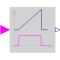

TimerTimer measuring the time from the time instant where the Boolean input became true |

|
Information
This information is part of the Modelica Standard Library maintained by the Modelica Association.
When the Boolean input u becomes true, the timer starts and the output y is the time that has elapsed since u became true. When the input becomes false, the timer stops and the output is reset to zero.

Connectors (2)
| u |
Type: BooleanInput Description: Connector of Boolean input signal |
|
|---|---|---|
| y |
Type: RealOutput Description: Connector of Real output signal |
Used in Examples (2)
|
Modelica.StateGraph.Examples A variant of the first simple StateGraph example |
|
|
Modelica.StateGraph.Examples A variant of the first simple StateGraph example |
Used in Components (1)
|
Modelica.Electrical.PowerConverters.ACDC.Control Generic control of 2*m pulse rectifiers |